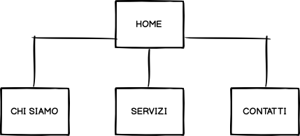
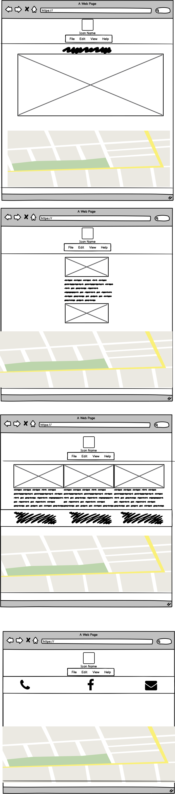

ABSTRACT
Attraverso la relizzazione di questo sito web vorrei presentare il palazzetto dello sport di San Lazzaro. E' un impiento sportivo dedicato a qualsiasi tipo di attività. Il sito è realizzato in modo semplice e chiaro, basato sull’oggettività in modo tale da permettere all’utente di trovare le informazioni principali attraverso semplici click.
BENCHMARKING
Obiettivi
Il sito è realizzato semplicemente per permettere all’utente di conoscere una struttura dedicata allo sport e ad eventi culturali.
STRUTTURA E LAYOUT
Architetura del sito
Alla home del sito sono collegate altre tre pagine ed ognuna di esse comprende chi siamo, i servizi e i contatti della struttura e l’utente può scegliere dove navigare.
Wireframe
Il mio sito web si compone di una pagina Home strutturata con il logo, formato da un’immagine, in grande, in alto e al centro. Inseguito si ha la barra del menù: ognuno dei bottoni è collegato ad un’altra pagina web che si delinea sempre con il logo in grande, in alto, al centro con sotto sempre il menù. Sotto al menu troviamo si ha una frese descrittiva dell'argomento di cui tratta il sito e di conseguenza sotto avviene lo scorrimento delle foto della struttura.
Look and Feel
Ho utilizzato il font “Questrial” e sans-serif. Il sito è basato sulle tonalità tenue del logo della pagina: rosa, verde acqua e bianco.
LINGUAGGI E STRUMENTI
Linguaggi
I linguaggi web utilizzati per la realizzazione del sito web sono HTML e CSS. Il templade è stato creato interamente da me
Strumenti
A supporto della progettazione web abbiamo utilizzato SublimeText2 come text editor, FontAwesome per le icone, Colorhunt per la palette dei colori, Googlefont per i font. Per la realizzazione del wireframe abbiamo usato Balsamiq. Per il controllo delle visualizzazioni ci siamo servite di Google Analytics, mentre per la pubblicazione abbiamo utilizzato Github.
COMMUNICATION STRATEGY
Background
Il sito è realizzato nella suo significato più semplice per permettere all’utente una navigazione diretta e facile da capire, con contenuti chiari e precisi. Le varie pagine lo guidano nella lettura e nella ricerca delle informazioni che gli possono maggiormente interessare. Da questo punto di vista risulta efficace per tutti gli utenti che cercano informazioni sulla struttura.
Obbiettivi comunicativi
Per questo progetto ho scelto di puntare sulla semplicità per renderlo accessibile a tutti gli utenti che non conoscono la struttura, ma che sono incuriositi a nuove attività.
Target Audience e Messaggio
Il sito si rivolge ad un pubblico ampio di ogni età; essendo una struttura organizzata sia per eventi sportivi che culturali, il target può variare e comprendere tutte le persone, uomini e donne. Questo tipo di target viene raggiunto molto spesso tramite social ed eventi con manifestazioni, per far si che le persone si incuriosiscano e cerchino poi informazioni aggiuntive. Il sito si impegna a dare informazioni base ad ogni utente che capiti sul sito riguardo la storia e i servizi. Il target audience troverà quindi informazioni semplici, chiare e precise.
Promotion
Intendo promuovere il sito web attraverso i social network ed eventi pubblicizzati. Inoltre il collegamento diretto con la pagina Facebook permette di rimanere aggiornati su novità, incontri, partite e tanto altro.
Valutazione dei risultati
L'obiettivo è stato raggiunto: ho creato una locandina per pubblicizzare il mio nuovo sito web.